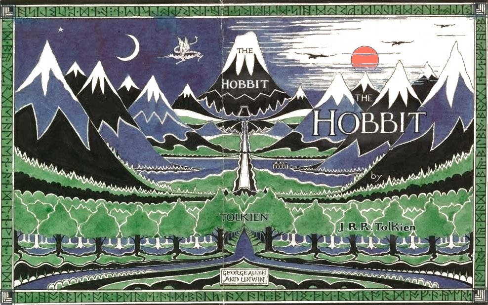

Welcome to Middle-earth!
A land of wonder and magic...
and great influence
In a quiet corner of the world, beneath the hills and beyond the rivers, lies the Shire. There began the tale of Bilbo Baggins, an unassuming hobbit whose courage stirred dragons, roused kingdoms, and proved that even the smallest hands can shape the fate of all.
A fellowship formed in darkness, a ring born of fire. From Rivendell to Mordor, the journey of heroes carved legends into the very stone of Arda. In the shadow of Mount Doom, the will of the Free Peoples was tested—and their bravery burned brighter than any flame.